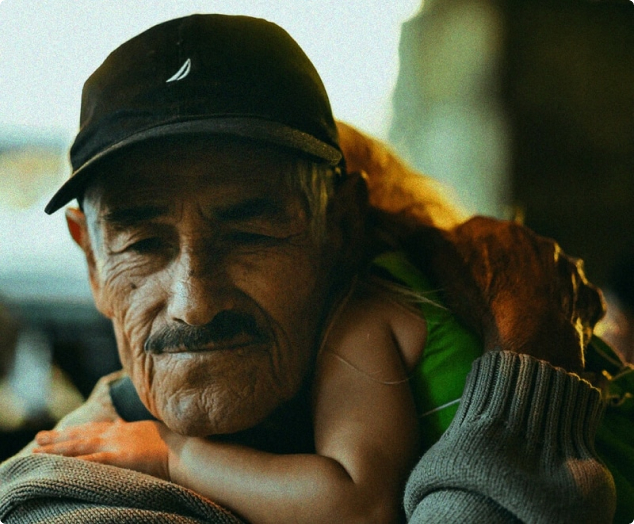
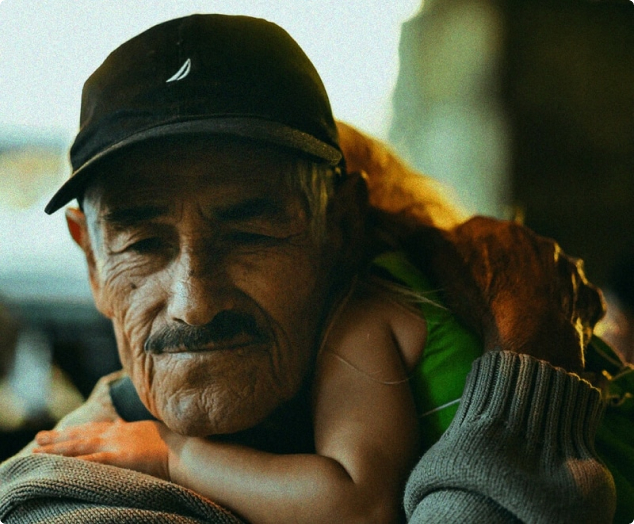

We are a non-profit that partners with state criminal justice agencies to advance their use of data and reduce incarceration.
-
intake an agency's disjointed data
-
deploy tools for all levels of decision making
-
improve outcomes for justice-impacted individuals
A human–centered definition of success.
Our approach is shaped by the perspective and experience of people impacted by the justice system. Together, we are focused on restoring equity and supporting success in the community.
 
